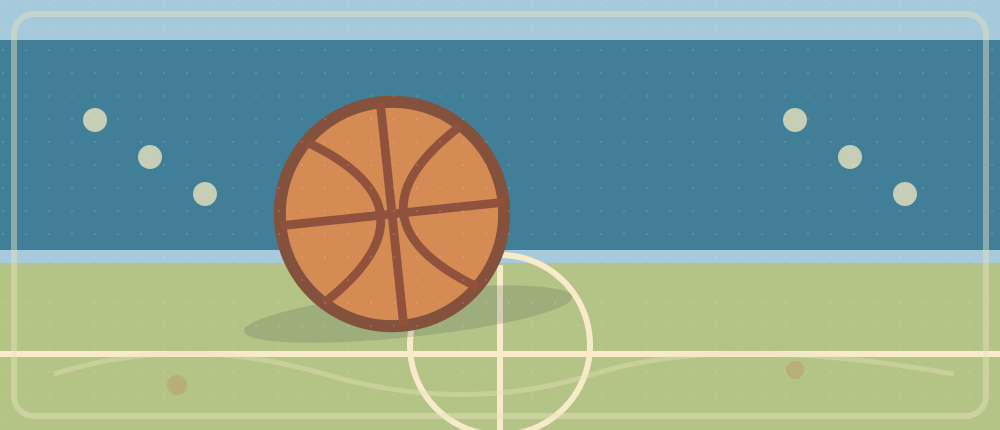

Knicks vs Raptors · Writing Reference

This file is an AI-organized writing reference. It is not your original draft and does not prove that today's tasks have been completed.
Reading the reference
Open the Markdown note with grammar analysis and historical source links. The article below is an AI example, not a independently verified sports news article.
Show the model essay ONLY after drafting independently
More Than a Preseason Win: What Toronto Showed Against New York
On October 13, the Toronto Raptors took on the New York Knicks in a preseason game and won 148–98. What caught my attention was not just the score, but how confidently Toronto played on both ends of the floor. Kawhi Leonard, who was getting reacclimated to the team, scored 21 points in his return, including four three-pointers.
One major reason for the huge margin was that the Knicks rested their usual starters on the second night of a back-to-back. As the defending NBA champions, New York may have been more focused on managing its players than winning a preseason game. Meanwhile, the Raptors put pressure on their opponents, and Leonard helped them build a commanding lead. This was encouraging, but it was not a fair test of two full-strength teams.
Even so, I would be careful about judging Toronto's future from a single preseason result. These games give players a chance to get back into game shape, adjust to teammates, and build team chemistry. In my view, this victory suggests that the Raptors have potential, rather than proving they are championship contenders. How far they go this season will depend on the health of their key players and how consistently they perform when the regular season begins.
Grammar patterns
| Focus | Recall cue |
|---|---|
| Past tense | Describe an already finished game: rest → rested |
| Questions with did | Why did Toronto ___ (dominate)? |
| Qualified inference | suggests / may / could vs proves |
| Sports collocations | play well on both ends of the floor |
| Evidence limitation | One preseason game cannot establish a season-long outcome |
One expression, new context
Retrieval cue: “一次测试的成功提示项目有潜力，但不能证明一定能成功。”
Reveal a possible pattern
The result suggests that the project could succeed, rather than proving that it will.
Transfer this sentence to a software prototype, not a sports game. Avoid copying it word for word.
Independent writing
Write 80–120 words: Can one encouraging result tell us whether a university software project will succeed? Explain a claim, evidence, and limitation.
0 / 80–120 words
Minimal structure hint
Claim → example → alternative explanation → what new evidence you need.
Reflection
After your own draft, record the one grammar relation you repaired and a new scenario in which it appears.
Actual original drafts and feedback remain in the 2026-10-14 calendar note linked from the Markdown reference.